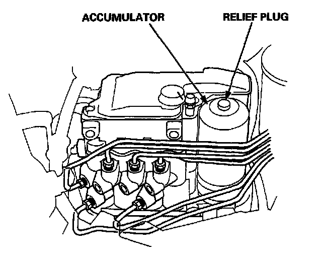
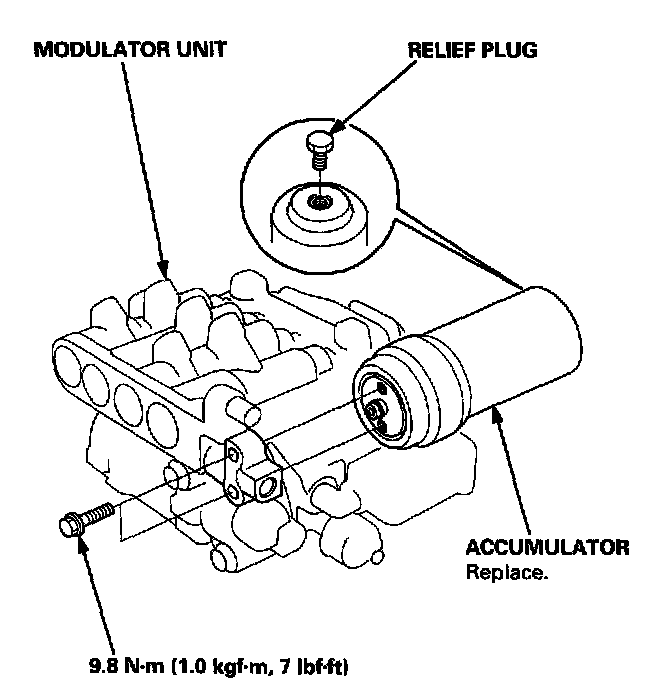
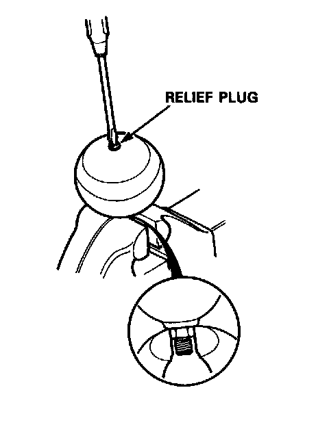

Brake Fluid Accumulator: Service and Repair
Accumulator Replacement and DisposalWarning
- The modulator unit contains high-pressure brake fluid. Be sure to bleed the high-pressure fluid from the modulator unit before removing the accumulator.
- The accumulator contains high pressure nitrogen gas. Do not puncture, expose to flame, weld, drop or apply impact to the accumulator. The modulator unit may explode and severe personal injury may result.
1. Bleed the high-pressure brake fluid from the modulator unit. Modulator Unit Bleeding (ABS)

2. Loosen the relief plug three and a half turns slowly, and wait for three minutes for all pressure to escape.
3. Remove the modulator unit from the car.
4. Remove the accumulator from the modulator unit.

5. Remove the relief plug completely, and dispose of the accumulator.
6. Install the new accumulator on the modulator unit.
7. Install the modulator unit.
NOTE: After installing the modulator unit and bleeding the brakes, start the engine and make sure that the ABS indicator light goes off.
WARNING: The accumulator contains high pressure nitrogen gas. Do not puncture, expose to flame or attempt to disassemble the accumulator or it may explode and severe personal injury may result.
Accumulator Disposal

1. Remove the accumulator.
2. Secure the accumulator in a vise so that the relief plug points straight up.
3. Slowly turn the plug 3-1/2 turns and then wait three minutes for all pressure to escape.

4. Remove the plug completely and dispose of the accumulator.